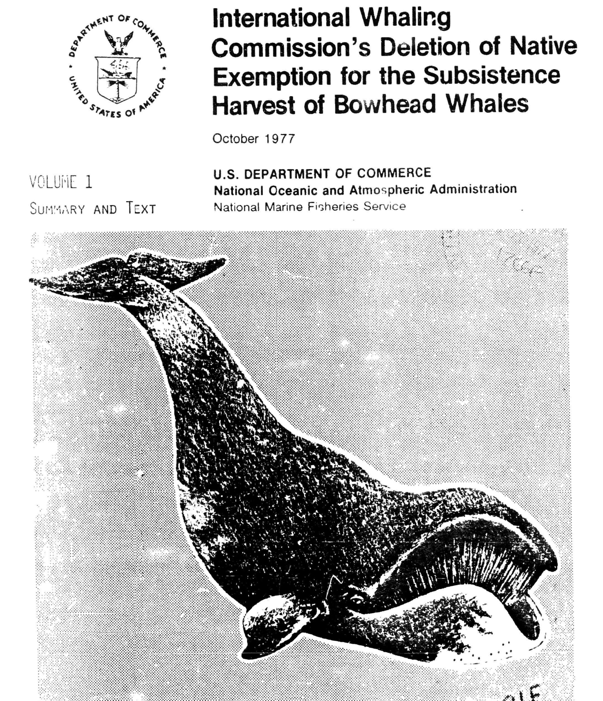

Knight Lab
EIS Archives — World's Largest Exploratory EIS Database
About the Project
The EIS Archives is a digital humanities project at Northwestern University's Knight Lab, funded by a grant from the Mellon Foundation.
In the prototype phase of the project, I worked in a team of 9 interdisciplinary students to take 181 Environmental Impact Statements and turn them into a digital exhibit, making them searchable and accessible for the first time. Visitors can explore an interactive theme network, a geographic map of all documents, and curated thematic exhibitions.

My role was extracting the metadata from the documents, which was the backbone for the final product. I improved numerous hard skills and more importantly, built adaptability and became a strong technical leader for a non-technical team.
Tools & Skills
Explore the Live Project
The EIS Archives prototype is live and publicly accessible:
Visit the EIS Archives